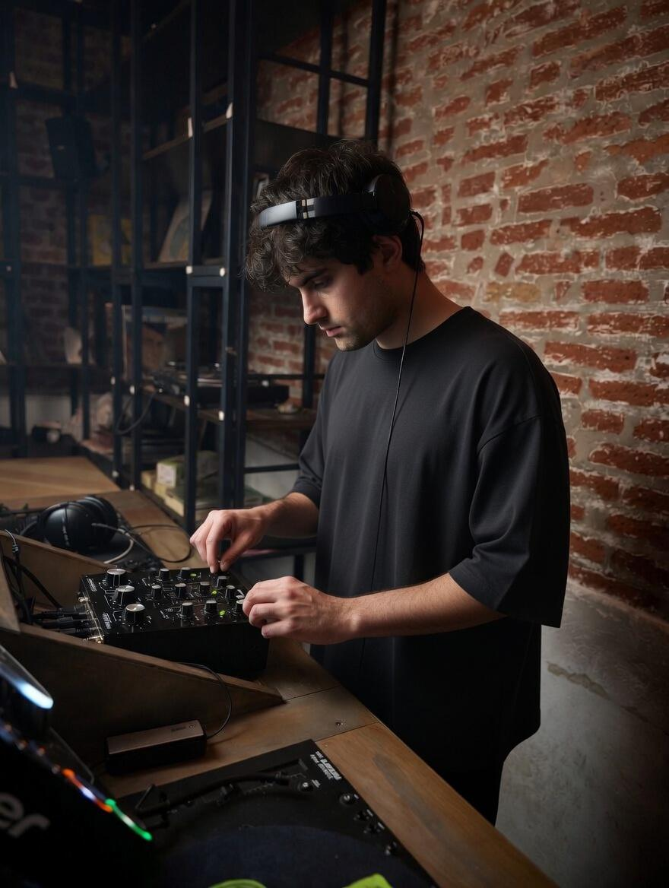
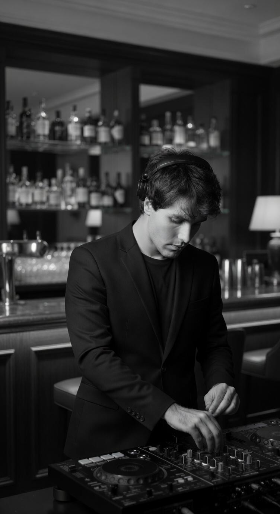

Prima Viola
Verdi Jazz Orchestra
Ruolo di sezione leader nella viola all'interno di formazione jazz sinfonica. Esecuzioni regolari in contesti di alta qualità artistica.
Violista professionista.
DJ & Producer.
Tecnico Audio & Stage Manager.
Daniel Calzone, in arte Daniel Khelz. Musicista e tecnico audio con oltre dieci anni di esperienza orchestrale e nella gestione di eventi dal vivo.
Specializzato in viola con competenze avanzate in post-produzione audio, stage management e direzione di produzione. Laureato in Nuove Tecnologie Musicali con specializzazione in Musica Elettronica e Tecnico del Suono al Conservatorio Giuseppe Verdi di Milano.
La sua identità artistica unisce viola classica, jazz e produzione elettronica — live electronics, DJ set e post-produzione in un unico percorso professionale.
Verdi Jazz Orchestra
Ruolo di sezione leader nella viola all'interno di formazione jazz sinfonica. Esecuzioni regolari in contesti di alta qualità artistica.
Orchestra Conservatorio Giuseppe Verdi Milano
Collaborazione continuativa con l'orchestra del Conservatorio. Partecipazione a stagioni concertistiche e produzioni teatrali.
Abbazia Jazz Festival
Concerto con David Weckl e il pianista Antonio Farò. Performance in contesto di festival prestigioso.
Mondaino Youth Orchestra
Concerto con Stevie Biondi e Simona Bencini (cantante dei Dirotta su Cuba). Esperienza in orchestra giovanile di eccellenza.
Monferrato Classic Orchestra
Partecipazione a produzioni orchestrali regionali.
Orchestra GD Major
Esibizione alla Fashion Week di Roma. Collaborazione con eventi fashion e culturali di alto profilo.
FuturOrchestra
Orchestra del Teatro Dal Verme di Milano. Esperienza formativa in contesto professionale milanese.
Orchestra ICM Milano
Prime esperienze orchestrali professionali. Sviluppo di competenze tecniche e di sezione.
Sunrise Jazz String Quartet
Collaborazioni con Cinzia Tedesco e Pino Iodice. Repertorio jazz e crossover.
"Mister Puccini in Jazz"
Performance con il Sunrise Jazz String Quartet e la cantante Cinzia Tedesco all'Auditorium Parco della Musica.
Tour "Michael - The Show"
Tournée nazionale con Jonathan Moffett e Jennifer Batten. Gestione di performance live ad alto livello tecnico.
Davide Cabiddu's Quartet
Registrazione album "Nutopia".
Vari club Milano e party privati
Performance live electronics e set musicali in contesti club e privati.


CLICCA SU FOTO O VIDEO PER INGRANDIRE / RIPRODURRE CON AUDIO
Conservatorio Giuseppe Verdi, Milano
2024 • Conservatorio Giuseppe Verdi, Milano • Docente: Prof. Alessandro Daniele
Conservatorio Giuseppe Verdi, Milano
Specializzazione: Musica Elettronica e Tecnico del Suono
Live, produzioni elettroniche, eventi o studio: contattami per progetti musicali, tecnici o di direzione artistica.
INVIA MESSAGGIO© 2026 Daniel Calzone • Daniel Khelz • Tutti i diritti riservati